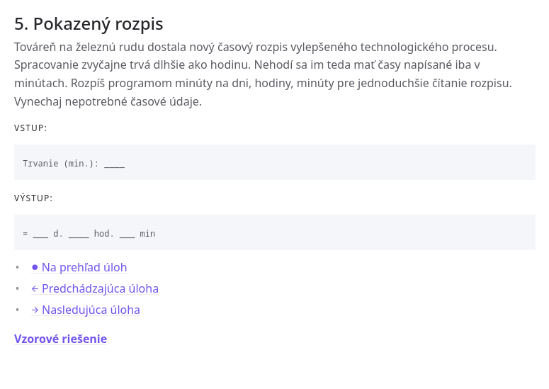
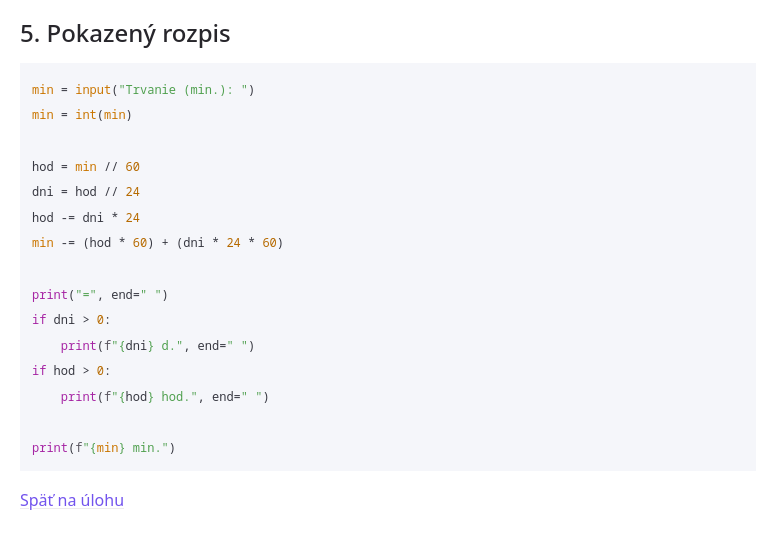
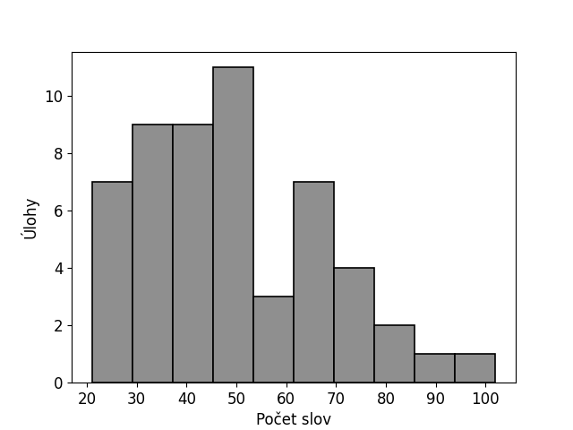
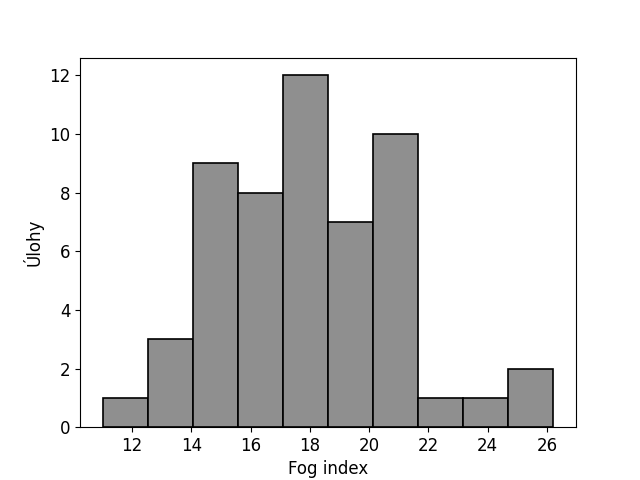

Výsledky práce
Medzi najdôležitejšie tu nachádzajúce sa dielo patria problémové úlohy z programovania pre začiatočníkov na stredných školách. V súvislosti s našou zbierkou úloh rozoberieme adoptovanú anatómiu úlohy a dôsledky vyplývajúce z terajšieho zoradenia cvičení. Vychádzame pritom z teoretických základov tvorby učebníc a požiadaviek na pestrosť aplikačného prostredia pre pojmy za účelom pritiahnutia záujmu učiaceho sa subjektu.
Zbierka úloh
Zhromaždený súbor zadaní z programovania sa skladá počtom z 54 úloh s riešeniami, ktoré sú rozčlenené do tematických častí nerovnomerne. Oddiel premenné má 11 úloh, podmienky - 9 úloh, cykly - 9 úloh, náhodné čísla - 3 úlohy, reťazce a zoznamy - 9 úloh, súbory - 5 úloh, funkcie - 8 úloh. Usporiadanie celkov pochádza čiastočne zo vzdelávacích štandardov ale aj zo zvyklostí.
Nepravidelnosti v kvantite častí nastali kvôli organickému a postupnému pribúdaniu úloh, ktoré reagovalo na potreby žiakov vedúcich ku zvládnutiu predmetu. Na kostru úloh sa dodatočne nabalili aj niektoré testové problémy, cvičenia na doma a upravené učivo z iných predmetov, ktoré trápilo žiakov pred písomkami. K zdanlivo relatívne menšiemu objemu časti súbory poznamenáme, že v skutočnosti prvá úloha spočíva v prispôsobeniu všetkých úloh z predošlej témy na súbory. Na súbory je preto k dispozícii až 13 úloh. Ďalej uvádzame znenia zadaní úloh.
Vzorové riešenia
Riešenia úloh v učebniciach spravidla zachytávajú jedinú správnu odpoveď v podobe čísla, oznamovacej vety alebo nákresu bez vysvetlenia postupu. Možností korektného usporiadania príkazov v programe existuje v princípe neobmedzené množstvo, ktoré len vzrastá so znalosťami pokročilejších vyjadrovacích prostriedkov programovacieho jazyka.
Podľa nášho názoru by ideálne riešenie úlohy podporujúce samoštúdium nemalo byť odhalené okamžite v celku, ale navádzať na postup cez čiastkové nápovede vo forme otázok. Riešiteľovi je za takých okolností jasnejšie, prečo si autor zvolili práve odkrytú programovú konštrukciu. Vyžaduje si to však náročnejšiu prípravu sady kontrolných otázok v učebnom materiáli. Alternatívne môže byť predostretý výpis programu zohľadňujúci požiadavky na vstup a výstup a oboznámenosť žiaka s témou v danom momente na základe predošlých úloh. V prípade ukázania už hotového riešenia slúži to iba na kontrolu. Pokladanie regulujúcich otázok spočíva na učiteľovi.
V prílohe sa nachádzajú exemplárne riešenia takmer všetkých úloh zo zbierky, okrem úloh zameraných na opakovanie predošlého celku a na divergentné myslenie. U týchto cvičení je riešenie nanajvýš naznačené výpustkami (\dots), ktoré sú vyznačené v úlohe "6.1. Prepisovanie". Spôsobom zachytenia riešení sa prikláňame v návrhu nášho učebného textu k použitiu na hodinách pod dohľadom učiteľa.
nazov_suboru = input("Názov súboru")
subor = open(nazov_suboru, "r")
for riadok in subor:
riadok = riadok.strip()
...
subor.close()
Na vzorovom programe úlohy "3.3. Pyramída" ukážeme prispôsobenie riešenia odpozorovaním chýb žiakov pri vypracovaní. Upozorníme na miesta, kde o zvolenom zápise rozhodujú predchádzajúce skúsenosti žiaka. Hneď prvý riadok, ktorý načítava vstup sa dá napísať troma variantmi rastúcej zložitosti na porozumenie.
Varianta č.1:
Varianta č.2:
Varianta č.3:
Variant č.~1 prísne odlišuje medzi výstupom cez príkaz print, načítaním vstupu z klávesnice cez input a konverziou písmen na typ číslo int. Vo variante č.2 už operujeme s viacúčelovosťou príkazu input, ktorá sa v skorších fázach pletie s priradením konštantného reťazca do premennej. Najsofistikovanejší spôsob sa spolieha na zápis zloženej funkcie a predstavuje idióm jazyka. Žiadna syntax vzorového programu nie je univerzálna, ale vyvíja sa postupom kapitol. V témach premenné a podmienky sa najčastejšie ukazuje variant č.2. Od témy cykly sa variant č.3 považuje za dostatočne známy.
Násobenie reťazcov:
Vnorené cykly:
for riadok in range(vyska):
...
for i in range(medzery):
print(" ", end="")
print()
for i in range(hviezdy):
print("*", end="")
print()
Náročnosť úlohy a tým umiestnenie v systéme je ovplyvnené aj typmi príkazov vo vzorovom riešení. Tretia úloha v kapitole cykly má za cieľ precvičiť for cyklus s pevne určeným počtom opakovaní, preto sa medzery a hviezdičky vypisujú násobením reťazcov. Napriek tomu, že reťazce sa dosiaľ neprebrali do hĺbky, je jednoduchšie na pochopenie idea, že: "6 krát hviezdička vypíše 6 hviezdičiek" než mechanizmus za vnorenými for cyklami. Na tomto príklade sa ukazuje závislosť zaradenia úlohy od použitého jazyka, pretože nie všetky umožňujú násobenie reťazcov.
Elektronická učebnica
Dostupnosť aktualizovaného učebného textu odkiaľkoľvek umožňuje umiestnenie úloh s riešeniami do online prostredia. Navigácia medzi zadaniami sa začína na klikateľnom obsahu, ktorý vymenúva všetky ich názvy s poradovým značením.
Zobrazenie úloh na samostatných stránkach namiesto celej kapitoly na spoločnej stránke vyplýva zo snahy o zníženie nadbytočnej vonkajšej extraneous kognitívnej záťaže. Zo skúseností počas vyučovania nevedeli žiaci spoľahlivo nájsť požadovanú úlohu, keď sa nachádzali bezprostredne za sebou. Na orientáciu malo negatívny dopad aj číslovanie kapitol rímskymi číslami. Posúvanie medzi predošlou a nasledujúcou úlohou, rovnako aj vzorové riešenie sú prístupné hypertextovým odkazom umiestneným na spodku stránky.
Zadanie a riešenie úlohy 2.5. na webe


Elektronická zbierka je voľná na stiahnutie cez portál Github pod licenciou Creative Commons s uvedením pôvodného zdroja a zachovaním licencie (CC BY-SA 4.0). V repozitári cez systém na správu verzií Git je učebný text otvorený voči návrhom na kolaboratívne pridávanie nových úloh. Postačuje ak redaktor schváli zmenu prichádzajúcu cez Pull request. Webová stránka zbierky úloh sa potom automaticky zverejnení prostredníctvom Github pages.
Diskusia
Rozbor učebného textu tvoreného problémovými úlohami zo základov programovania demonštrujeme vo dvoch líniách. Vyjadrujeme jednak číselné charakteristiky textov zadaní a takisto zovšeobecňujeme ich ustálenú obsahovú podobu. Rámec na budúce obohacovanie zbierky o nové zadania sa opiera o výrazové prvky programovacieho jazyka, ktoré má úloha precvičovať, a následnú kategorizáciou úlohy v tematickom celku ku vzťahu k existujúcim úlohám.
Číselný opis textov zadaní
Združenia viet popisujúce problémovú situáciu a pokyny k činnosti patriace pod spoločnú úlohu boli vyhodnotené algoritmom uvedeným v prílohe pre každú úlohu zvlášť. Ako číselné vlastnosti sme zvolili počet slov, počet viet a skóre čitateľnosti cez fog index.
Kvantifikatívne vlastnosti textu úloh


V prílohe sú získané hodnoty v tabuľkách pre všetky znenia cvičení zoskupené po kapitolách. Histogramy poukazujú na to, že priemerný počet slov naprieč zadaniami je \(49 \pm 18\) a teda dominujú kratšie texty v rozmedzí \(30\) až \(80\) slov. Priemerný počet viet je \(4 \pm 1\) a žiaden text ich nemá viac ako \(8\). Fog index sa sústreďuje okolo skóre \(18 \pm 3\), čo značí že texty sú primerane zrozumiteľné pre žiakov stredných škôl. Vo všeobecnosti texty so skóre pod 20 sa pokladajú za veľmi ľahko čitateľné. Do vzorca fog indexu vstupuje počet slov na vetu, ktorých priemer je \(10 \pm 2\), a percento ťažkých slov zo všetkých, tých je priemerne \(33.8\% \pm 8\%\).
Merania fog indexu sme brali výhradne ako odporučenie na úpravu textu, pretože je prispôsobený anglickým textom a optimálnej dĺžke textu so 100 slovami. Napriek tomu sme cvičenia s vyšším fog indexom uspôsobili skrátením komplikovaných viet a zamenením náročnejších slov za bežné. Hodnovernejšie posúdenie by poskytlo sémantické kritérium špeciálne určené pre problémové úlohy, také nám lež nie je známe.
Predloha štruktúry úlohy
Aby podoba znení pôsobila rovnorodým dojmom, pridržiavame sa stáleho rozvrhnutia vnútorného usporiadanie textu cvičenia. Zadanie sa začína opisom scenérie prostredia, kde sa dej odohráva. Nasledujú fakty, vzťahy a požiadavky na vstupy uvádzajúce algoritmizovateľnú problémovú situáciu. Úryvok ukončuje najčastejšie explicitné vyjadrenie pokynu v rozkazovacom spôsobe. Pokyn na riešenie nemusí byť priamo vyslovený. Na objasnenie očakávaní techník, ktoré má žiak zvoliť pri riešení, slúži ukážka behu programu.
Prítomnosť opísaných štruktúrnych prvkov textu dokladáme vybranými úlohami zo zbierky. Tri hlavné časti nazývame skrátene: scenéria, problém a pokyn.
1.5. Hlboká roklina
Scenéria: "Stojíš nad hlbokým údolím za zábradlím a uvažuješ ako odmerať jeho hĺbku. Vtom si spomenieš na svoje vedomosti z fyziky. Zoberieš si do ruky povaľúci sa kameň a pustíš ho priamo do rokliny."
Problém: "Zároveň stlačíš stopky, ktorými zmeriaš čas do dopadu v sekundách. Kameň padá nadol voľným pádom. > Stopky zastavíš pri započutí rachotu z nárazu. Pri výpočte zanedbáme rýchlosť zvuku, ktorou sa rachot rožšíri až k nám."
Pokyn: Implicitný
2.1. Heslo
Scenéria: "Tvoj dom na strome už vykradlo pár nezvaných návštevníkov. Vymyslel si preto spôsob ako povoliť návštevu len overeným osobám."
Problém: "Tie musia poznať tajné heslo."
Pokyn: "Napíš program, ktorý slovne privíta členov a odoženie zlodejov."
2.4. Morský vánok
Scenéria: "Kapitán plachetnice na otvorenom oceáne musí mať vždy prehľad odkiaľ fúka vietor, aby odkormidloval do vytúženého cieľa. Príliš silné závany vetra môžu byť nebezpečné pre posádku. Polámať lodné sťažne, potrhať plachty, či zaplaviť palubu."
Problém: "Cez rádio dostáva plavidlo každý deň správy o predpovedi sily vetra v Beafortovej stupnici. Sila vetra je ňou vyjadrená do dvanástich stupňov od bezvetria až po orkán."
Pokyn: "Napíš program, ktorý kapitánovi vysvetlí stupeň vetra. Podľa stupnice určíme jeho pomenovanie, rýchlosti v námorných uzloch a očakávanej výšky vĺn."
5.5. Výskyt písmen
Scenéria: "Dlho do noci čítaš časopisy o umelej inteligencii a fascinuje ťa jej schopnosť rozprávať sa s človekom."
Problém: "Na vytvorenie viet na danú tému potrebuje mať prehľad o percentuálnom výskyte hlások v texte."
Pokyn: "Spočítaj a vypíš zoznam početnosti písmen v reťazci."
7.1. Vraky
Scenéria: "V šírych hlbinách Atlantiku sa stále ukrýva nepreberné bohatstvo vo vrakoch potopených lodí. V tejto minihre odkryješ tajomstvo skrývajúce sa pod hladinou."
Problém: "Cieľom je nájsť vrak parníka na náhodnej pozícii."
Pokyn: "Do programu napíš funkciu vzdialenost(x, y), ktorá na základe zadaných súradníc vypočíta ako ďaleko si od vraku."
Písomný prejav má tvar 2. osoby jednotného čísla. Kladieme si tým predpoklad, že zlepšíme zrozumiteľnosť, keď sa priblížime reči rovesníkov. Uľahčenie v chápaní komunikačného zámeru dosiahnutý pravidelnosťou, nám umožňujeme pridať na inferečnej zložitosti. Namiesto žiakovho sústredenia sa na povrchovú orientáciu v texte ponechávame priestor na vyvodzovanie súvislostí, čím podporujeme čítanie s porozumením.
Grafická úprava úlohy je taktiež zjednotená a sa skladá z nadpisu, textu zadania, ukážka vzorového súboru ak je prítomná, vstupov a výstupov programu. Nadpis úlohy obsahuje číselné označenie kapitoly, poradia úlohy vnútri kapitoly a jej názov v podobe slovného spojenia. Vstupy a výstupy programu sú orámované v oblasti so šedým pozadím, písmo je neproporcionálne, a premenlivé údaje závislé od vstupov sú zastúpené prázdnymi obdĺžnikmi. Na ilustráciu správania po spustení programu sú do obdĺžnikov niekedy vpísané konkrétne hodnoty.
Didaktické funkcie úloh
Graduálne stupňovanie náročnosti úloh do troch úrovní, rovnomerné zastúpenie napĺňania rozličných didaktických funkcií a zapojenie viacerých kognitívnych úrovní overíme klasifikovaním úloh. Príloha zachytáva zaradenie samotných zadaní do systému úloh. Téma, podtéma a element sú prevažne predurčené názvom kapitoly, preto tie nešpecifikujeme.
Určenie didaktických funkcií úlohy je do značnej miery subjektívne, preto na odôvodnenie našich rozhodnutí ponúkame osobitnú interpretáciu kategórií. Logickým štruktúrovaním učiva tematickej oblasti postupne žiaci prechádzajú istými fázami v oboznamovaní sa s učebnou látkou, ktoré najlepšie podporujú úlohy s určitou didaktickou funkcie.
Prípravné úlohy sa vyskytujú pred uvedením samotného elementu učiva a majú navádzať k potrebe naučenia sa novej metódy, ktorá je v zapätí akoby objavená. Javy z programovania, kde k tomu dochádza, sú duplikácia rovnakého kódu tesne pred predstavením cyklov alebo výskyt veľa premenných základného typu pred oboznámením sa s jednorozmerným poľom. V našej zbierke sa také úlohy priamo nenachádzajú, ale ich znaky pripisujeme niektorým úvodným úlohám kapitol.
Po prípravných úlohách nastupujú na rad propedeutické úlohy, s ktorými sa zvyknú prelínať. Propedeutické úlohy však poskytnú triviálny prípad použitia novej syntaxe, a nepoukazujú už na ťažkopádnosť doposiaľ naučených možností zápisu problému. Zložitosťou majú byť tieto skupiny úloh menej náročné.
Sekvencia etáp vyučovacieho procesu predraďuje motiváciu pred expozíciou. V našom ponímaní majú úlohy s motivačnou funkciou vzhľadom k poznávaciemu procesu obrazne donútiť žiaka, aby preskúmal externé zdroje informácií. Fakty, ktoré nenájde v učebnici programovania, má byť potom motivovaný hľadať v učebniciach iných predmetov, v príručkách, knihách alebo na internete. Týkať sa to môže napr. fungovania hodu kockou, nájdenia matematických vzťahov, či dopĺňania banky otázok pre kvíz.
Po uvedení cez propedeutické úlohy sa prepracúvame k úlohám na osvojenie pojmu, vzťahov a postupu. Koncept prvku programovacieho jazyka sa po prvotnom vystavení ukazuje v tej istej základnej podobe v rozličných situáciách. Spomenieme cyklus, ktorý vypíše najprv desať totožných riadkov, potom hviezdičky v rovnakom riadku alebo hviezdičky po diagonále. Ukončovacia podmienka for cyklu zostáva zakaždým rovnaká, pribúdajú výlučne príkazy bez akéhokoľvek ovplyvňovania toku programu v tele cyklu. Úlohy na osvojovanie sú menej náročné.
Úlohy napĺňajúce funkciu upevňovania učiva sa málo líšia od úloh na opakovanie a systematizáciu. Zámena účelu úlohy z týchto dvoch skupín závisí od toho, kedy ju žiak bude riešiť vzhľadom na doterajšie nadobudnuté znalosti a skúsenosti. Pokiaľ sa pridržiava nami vymedzeného poradia úloh, tak funkcia upevňovania prislúcha skorej uvedeným úlohám, kde ešte dochádza k postupnému nabaľovaniu vyjadrovacích možností príkazu. Podmienka if sa vtedy rozširuje o vetvy elif a else. Systematizáciou sa nepridávajú vlastnosti jazyka, ale stúpa náročnosť problémových situácií, na ktoré sú aplikované. Tvoria predpoklady pre stredné aj vysoko náročné úlohy.
Aktualizačné úlohy zapájajú skorej osvojené učivo do inovatívnych problémov, kde nastáva po prvýkrát súhra medzi staršími a novými elementami programovacieho jazyka. Úloha s aktualizačnou funkciou je napríklad najskoršie umiestnené zadanie na vetvenie v cykle alebo na iteráciu cez znaky reťazca namiesto cez inkrementujúce sa počítadlo.
Aplikačná funkcia mimo alebo vo vnútri informatiky súvisí s medzipredmetovými vzťahmi, ktoré rozoberáme v ďalšej časti. Podstata odhalenia aplikácie v inom vyučovacom predmete vychádza z pojmov v texte zadania.
Zoradenie systému úloh v rámci témy zbierky sa riadi ich najmarkantnejšou didaktickou funkciou. Od jednoduchším k zložitejším zadaniam začíname prípravnou funkciou a pokračujeme propedeutikou, osvojovaním, upevňovaním, opakovaním a systemizáciou. Priebežne celou témou sa tiahne aktualizácia predošlého učiva a motivácia. Kde nastane zhoda v hlavnej funkcii, tam sa na skoršie miesto vloží úloha s nižšou úrovňou vyžadovaných poznávacích procesov. Úlohy na konvergentné myslenie predchádzajú tie s divergentným riešením.
Medzipredmetové vzťahy
Podľa didaktickej zásady spojenia teórie s praxou a na prispenie ku kompetencií celoživotného učenia sa pre život dbáme na interdisciplinaritu nastolených problémov zasadených do reálneho sveta. Medzipredmetové aplikácie čerpajú z matematiky (16 úloh) a finančnej gramotnosti (2 úlohy), fyziky (4 úlohy), slovenského jazyka a literatúry (3 úlohy), geografie (2 úlohy), dejepisu (2 úlohy) a chémie (1 úloha).
Matematika má z hľadiska využitia jej aparátu v programátorských úlohách nespornú výhodu pre blízkosť k informatike ako takej. Existujú zároveň viaceré možnosti znovupoužitia príkladov z matematických učebníc. K medzipremetovým vzťahov s matematikou prispievajú témy: objem a obsah telies (1.6, 1.8, 1.9), meranie času (2.5), kalkulačky (2.6, 7.8), kvadratické rovnice (2.8), trojuholníky (2.9.), malá násobilka (3.8, 4.3), zlomky a percentá (5.5, 5.6, 7.6), finančná gramotnosť (3.9, 5.7), súradnicová sústava (7.1), binomická veta (7.3), štatistika (7.4). Do fyziky môžeme zaradiť úlohy ohľadom: teploty (1.4), kinematiky (1.5, 1.7), dynamiky (1.11). Slovenského jazyka sa okrajovo týkajú úlohy na: rým (1.2), hláskoslovie (5.2), tvaroslovie (5.8). Pod témy súvisace s geografiou spadajú meteorológia (2.4) a kartografia (6.2), z chémie sme zahrnuli roztoky (1.10) a z dejepisu sa zmieňujeme o Májskych pyramídach (3.3) a rímskych číslach (7.5).
V zbierke je tiež 9 úloh s rýdzo informatickým zameraním: heslá (2.1), hry a simulácie (4.1, 4.2, 7.7), šifrovanie (7.2), kompresia (5.9), databázy (6.3, 6.4, 6.5).
Výber vhodných úloh s medzipredmetovými vzťahmi spolieha na učiteľa, aby pružne reagoval na časové súvislosti v učebných plánoch nadväzujúcich predmetov. Predbiehať predmetu, z ktorého úloha čerpá je nežiaduce, pretože to so sebou nesie znásobené časové nároky na objasnenie a hrozbu nadobudnutia povrchného obrazu o prebratej oblasti.